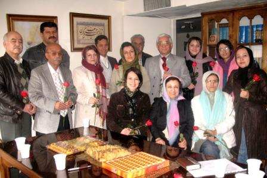

|
|

دیداراعضای کمپین حمایت از کانون مدافعان حقوق بشر با وکلا/ وکلای مدافع حقوق بشر باید از مصونیت برخوردار باشند
يكشنبه6 بهمن 1387
تغییربرای برابری - ایدا سعادت - تعدادی از اعضای کمپین حمایت از کانون مدافعان حقوق بشر در اولین اقدام خود روز جمعه با شیرین عبادی و برخی از وکلای این کانون دیدار کردند. در این دیدار که در دفتر شیرین عبادی انجام شد حاضرین با اهدای شاخه های گل از اقدامات کانون مدافعان حقوق بشر و وکلای آن تجلیل کردند.
خدیجه مقدم یکی از فعالان جنبش زنان که از اعضای کمپین حمایت از کانون مدافعان حقوق بشر است در ابتدای این نشست گفت: " ما از برخوردهایی که با کانون مدافعان شده است ناراحت هستیم و امیدواریم با حمایت شما جامعه مدنی در ایران به تدریج شکل واقعی خود را پیدا کند." وی سپس شرح مختصری از برنامه های آتی کمپین از جمله راه اندازی سایت آن در هفته آینده ارائه کرده و گفت ما همیشه مدیون کانون مدافعان حقوق بشر هستیم و حمایت از آن را وظیفه ی خود می دانیم.

شیرین عبادی با اشاره به این که همیاری و همراهی فعالان جنبش زنان همواره باعث دلگرمی اعضای کانون مدافعان بوده است از راه اندازی این کمپین حمایتی ابراز خرسندی کرد. عبادی گفت: "جنبش فمینیستی ایران که البته خواست تنها زنان نیست و مردان زیادی هم نقش زیادی در آن داشته اند، نه تنها قوی ترین جنبش ایران بلکه قوی ترین جنبش خاور میانه است. چرا که هیچ حرکتی را به این اندازه گسترده افقی و تاثیر گذار نمی بینیم. راهی را که شما شروع کرده اید با یاری همدیگر سرمشق شده است برای بسیاری از کشورها. در سفرهایم به کشورهای دیگر افراد زیادی از نحوه کار در کمپین می پرسند و این برگ افتخار دیگری است بر افتخارات زنان ایران."
شیرین عبادی پلمپ غیرقانونی کانون مدافعان حقوق بشر را به معنای تعطیل شدن فعالیت های این نهاد ندانسته و اظهار داشت: "درست فردای روزی که دفتر کانون را به طور غیر قانونی پلمب کردند روابط عمومی کانون اطلاعیه داد و در مصاحبه ها هم به تاکید پافشاری کردیم که دفتر کانون پلمب شده است دهان ما را که نمی توانید پلمب کنید. موجودیت کانون چند اتاق نبود و ما می توانیم هر جای دیگری هم به کار خود را ادمه دهیم. گزارش سه ماهه نقض حقوق بشر در ایران هم با فاصله ی کمی از پلمپ کانون بیرون آمد و یک هفته بعد از پلمپ کانون بود. از سوی دیگر از همان موقع به بعد تازه تعداد زیادی پرونده هم قبول کرده ایم. اعلامیه های بیشتری داده ایم و مواضع خود را مرتبا اعلام می کنیم. کانون به همان شیوه قدیم ادامه خواهد داد و سعی ما بر این است که رفتار قانون مند را به مامورین حکومت آموزش دهیم. عمل کردن به قانون به نفع هر حکومتی است و کسی که قانون را می نویسد پیش از همه خود باید آن را اجرا کند."
رئیس کانون مدافعان حقوق بشر همچنین توضیحاتی پیرامون پیگیری های قانونی انجام شده در رابطه با فشارهای اخیر بر کانون مدافعان حقوق بشر و یورش به دفتر وکالت و همچنین تجمع در مقابل منزل شخصی اش ارائه کرد و افزود: "همزمان با پلمب دفتر کانون مدافعان حقوق بشر کانون مشارکت برای پاکسازی مین که پروانه فعالیت نیز دارد تعطیل شده است که از سوی این دو نهاد شکایتی را تنظیم و تسلیم قوه قضائیه کرده ایم و این شکایت حتا به مرحله کیفری هم رسیده است. مساله یک آپارتمان نیست بلکه باید به قانون احترام بگذارند. نه به خاطر دفتر بلکه به خاطر نفس عمل من تا آخرین لحظه به دنبال بازگشایی کانون خواهم بود امیدوارم در ایران به نتیجه برسیم. خوشبختانه حقوق بین الملل هم پشتیبان ما است برای این که در سال 1998 قطعنامه ای تاسیس شد که در آن قید شد مدافعین حقوق بشر باید از مصونیت برخوردار باشند و دولت ها باید کمک کنند که این افراد بتوانند وظایف خودشان را انجام بدهند. دولت ایران هم این قطعنامه را پذیرفته است و متعهد به اجرای آن است."
برنده جایزه صلح نوبل همچنین در رابطه با سرنوشت اسناد و مدارکی که تحت پوشش بررسی های مالیاتی از دفتر وی خارج شده بود توضیحاتی ارائه کرد: " در مورد مدارکی که برده بودند کارشان صد در صد خلاف قانون بود چرا که به موجب قانون اگر بخواهند برای بازرسی مالیاتی بیایند می توانند اسناد مالی را ببینند وبررسی کنند و اگر مودی اجازه نداد حداکثر کاری که قانون در این موارد انجام می دهد این است که چون همکاری نکرده است مالیات را به صورت علی الراس تشخیص می دهند. البته در این مرحله هم برگه ای صادر می شود به نام برگه تشخیص مالیات که قابل شکایت است و مراحل خاص خودش را دارد. فردای آن روز هم در این رابطه شکایت کیفری هم کردم چون این کارشان صد در صد خلاف قانون بود ضمن این که من هرگز بدهی مالیاتی نداشتم . اصلا نمی شود کسی در حرفه ی ما بدهی مالیاتی داشته باشد. از طرفی وکلا هر سال باید پروانه وکالت را تمدید کنند که موکول می شود به ارائه ی مفاصا حساب مالیاتی از دارایی و به هر حال هم من این مسائل را می دانستم و هم خودشان می دانستند که کارشان را به این بهانه پیش می برند. به همین دلیل هم به پلیس خبر دادم که بعد نگویند ماموران خودسر بوده اند. یک هفته تمام مدارک را در اختیار داشتند و چون تمام این مدارک را بدون برشماری برده بودند و ما نمی دانستیم که چه چیزی کم یا زیاد شده است در صورت جلسه ای که تنظیم شده بود نوشتیم ما برای آن چه تحویل گرفته ایم رسید می دهیم و در نهایت عصر چهارشنبه ی گذشته مدارک را بدون برشماری تحویل گرفتیم. "
عبدالفتاح سلطانی وکیل کانون مدافعان حقوق بشر با تاکید بر این که وظیفه اصلی کانون دفاع از متهمین عقیدتی و سیاسی و قربانیان نقض حقوق بشر بوده است با مقایسه فعالیت های کانون مدافعان حقوق بشر و کمپین یک میلیون امضا یکی از رموز توفیق کمپین را در نوع نگاهی که به زن و حقوق وی دارد دانست و گفت کمپین زن را فارغ از ملیت، نژاد و باورهای مذهبی و سیاسی در نظر می گیرد و بر نگاه انسانی به زنان تاکید دارد و دقیقا همین نوع تفکر نیز در کانون مدافعان حقوق بشر وجود داشته است.
سلطانی گفت: "شاید برای اولین بار در صد سال اخیر دیدگاه های مختلف و باورهای مختلف سیاسی در کانون مدافعان دور هم جمع شده اند. باور ما بر این است که حقوق بشر هیچ مرزی ندارد و مذهب و دیدگاه سیاسی را دور هم جمع کرده است حول محور خاص که حقوق بشر است. این مساله برای جناح تندرو نامیمون است که همه افراد با دیدگاه های مختلف دور هم جمع شوند." وی تنها راه نجات در آینده را در بسیج تمامی امکانات حول محور حقوق بشر دانست و گفت: " این نگرش به نظر من هم در کمپین یک میلیون امضا و هم در نهاد های حقوق بشری از جمله کانون مدافعان حقوق بشر رمز موفقیت ما بوده است. این نکته را باید در برخوردهای آینده هم مد نظر داشته باشیم. "

نرگس محمدی سخنگوی کانون مدافعان حقوق بشر نیز ترویج و تبلیغ اعلامیه ی جهانی حقوق بشر و پایبندی به آن را به عنوان هدف اصلی کانون برشمرده و گفت دفاع از زندانیان عقیدتی و سیاسی یکی از هدف های کانون بوده است: "سال 1948 که اعلامیه به تصویب می رسد دبیرکل وقت سازمان ملل متحد از همه دولت ها می خواهد که برای تبلیغ و ترویج این اعلامیه کمک کنند و این جای خوشحالی است که امروز به نقطه ای رسیده ایم که اراده ملت ها برتر از اراده دولت ها است. این ملت ها هستند که اعلامیه حقوق بشر را تبلیغ می کنند و آن را از دولت خود می خواهند. نقض حقوق بشر در بسیاری از حوزه ها مانند انتخابات صلح حق اشتغال حقوق زنان و برابری و رفع تبعیض های قانونی علیه زنان هم وجود دارد بنا بر این یک گستره ی بزرگتری برای فعالیت در زمینه حقوق بشر در ایران پیش روی مدافعان آن قرار دارد که کانون مدافعان بشر نیز تا کنون در همین راستا فعالیت کرده و ادامه خواهد داد." محمدی شروع به کار کمپین حمایت از کانون مدافعان به همت فعالان جنبش زنان را به فال نیک گرفت و گفت این حرکت حمایتی نشان می دهد که ما توانسته ایم همکاران جدی زیادی در کار خود پیدا کنیم و بستر فعالیت حقوق بشری در ایران واقعا وجود دارد."
در ادامه ی این دیدار، محمد سیف زاده از تاثیری که تاسیس کانون مدافعان حقوق بشر بر جا گذاشته است سخن گفت: " در کانون را بستند اما به عنوان اولین تشکل حقوق بشری که در ایران بعد از انقلاب تشکیل شده است فعالیت های این نهاد بسیار موثر بوده است. با یک حساب سرانگشتی از زمان تاسیس کانون تا به حال اعضای آن در حدود 500 مقاله در تبیین حقوق بشر و حقوق شهروندی در روزنامه ها نوشته اند. کلاس هایی را برای آموزش روزنامه نگاران و وبلاگ نویس ها گذاشتیم. در زمینه های بازداشت های خودسرانه و حقوق زنان و کودکان و مسائلی که می گذرد مرتب موضع گیری کردیم. در مورد انتخابات هم اعلام کردیم که آنچه در ایران می گذرد انتصاب است و برخلاف انتخاب انسانها است. گرچه از بستن کانون همه ناراحت هستیم اما زمانی بود که اگر ما در دادگاه ها از حقوق بشر صحبت می کردیم حداقل انگ غربی بودن به ما می خورد و یا بازداشت شده و به زندان می رفتیم اما امروز حقوق بشر دغدغه همه است و این تنها با پشتیبانی همه دوستان از طیف های مختلف بوده است. "
دکتر اسماعیل زاده عضو دیگر کانون مدافعان حقوق بشر نیز گفت: " روز يورش عنوان مي شد كه چرا كانون درباره جنگ غزه و خشونتي كه بر زنان و كودكان در اين جنگ مي رود چيزي نمي گويد در حالي كه درباره جنگ غزه ما اعلام موضع كرديم و بيانيه داديم."
گفتنی است كمپين حمايت از كانون مدافعان حقوق بشر از روز بيست و چهارم دي ماه به همت جمعی از فعالان حقوق زنان آغاز به کار کرد. سایت این کمپین به منظور انعکاس فعالیتهای آتی این کمپین و همچنین معرفی هر چه بیشتر فعالیت های حقوق بشری شیرین عبادی و کانون مدافعان حقوق بشر به زودی راه اندازی خواهد شد.
کانون زنان ایرانی - فعالیت کانون مدافعان حقوق بشر ادامه دارد
روایت تصویری آرش عاشوری نیا از دیدار با اعضای کانون مدافعان حقوق بشر